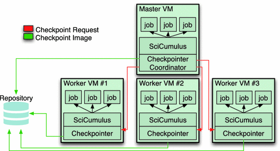

Research Areas
My research focuses on a diverse set of themes that lie at the intersection of data management, scalable infrastructures, scientific discovery, and intelligent systems. These areas combine theoretical advances with practical applications, aiming to build tools, methods, and systems that empower science and technology in the era of big data and artificial intelligence.

Scientific Workflow Management
This area investigates how to model, execute, and optimize large-scale scientific workflows.
Research focuses on automation, reproducibility, and fault tolerance to enable scientists
to orchestrate complex experiments seamlessly, reducing human effort and improving scientific productivity.
Cloud Computing
Research in cloud computing addresses elasticity, scalability, and cost-effectiveness
in distributed environments. By leveraging virtualized resources and on-demand infrastructures,
the goal is to optimize performance and reduce barriers for executing data-intensive scientific experiments.

Provenance Data Management
Provenance, or data lineage, ensures that scientific results are transparent and reproducible.
My work develops models, storage systems, and analysis techniques that make it possible to
capture, query, and reason about the origin, evolution, and trustworthiness of data at scale.

Bioinformatics
Bioinformatics integrates computing and biology to address challenges in genomics, transcriptomics,
and molecular biology. Research focuses on designing scalable data pipelines, efficient algorithms,
and workflow solutions that support the analysis of massive and heterogeneous biological datasets.

Data Management for Machine Learning
Preparing data for machine learning is a complex and costly process.
This research area explores methods for feature engineering, data cleaning, integration, and sampling,
ensuring that ML models are trained with high-quality data while optimizing efficiency and scalability.

Machine Learning for Data Management
Instead of only preparing data for ML, this area investigates how ML techniques
can improve traditional data management tasks. Applications include intelligent indexing,
adaptive query optimization, and workload prediction, enabling smarter and more efficient data systems.

eScience
eScience is the use of advanced computational methods to accelerate scientific discovery.
This area involves designing infrastructures, data repositories, and collaborative platforms
that enable interdisciplinary research, promote open science, and help scientists turn vast
amounts of data into knowledge and innovation.